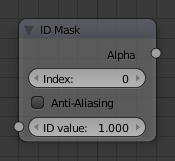
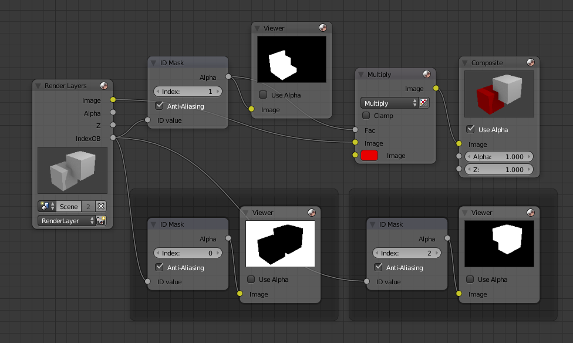

ID遮罩节点¶

ID遮罩节点。
ID遮罩节点 用于获取每个对象或每个材质的alpha遮罩。
输出¶
- Alpha通道
- 白色的遮罩部分为保留部分，黑色的遮罩部分是移除部分。若对象带有透明像素，alpha遮罩呈现出灰度值变化。
Note
In Blender Internal if a transparent object is in front of another, the mask will not reflect partial visibility of the object behind.

范例¶
在这个范例中，左侧鲜红色矩形物体指定为索引1，右侧的矩形物体指定为索引2.当两个物体有相互交叉，可以从像素排列看出来，因为在一起的交叠部分有个尖锐的角度，颜色也不相同。在对象1上使用遮罩，在其表面有平滑的边缘，这是因为改善了使视觉看着不舒服的线条，使其平滑显示。

Id遮罩节点范例。